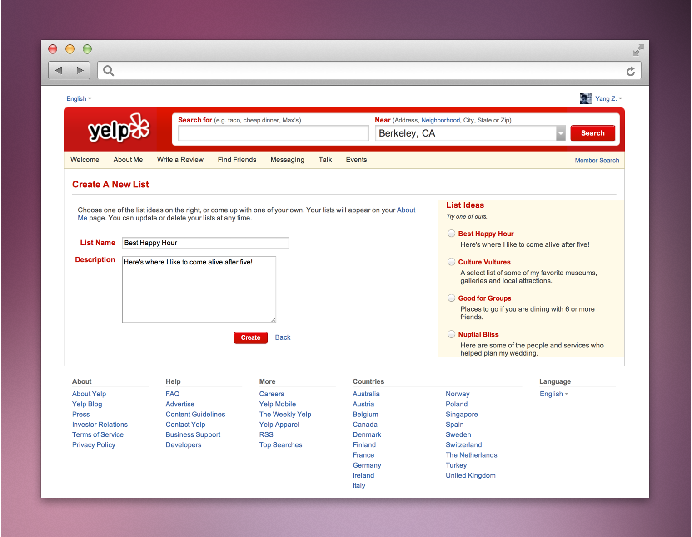

Understand the challenges
Many people do not know this feature. It sounds like a good idea, but is poorly designed for Yelpers to access, set up, and maintain their review lists.
Understand the users
Active Yelpers are mostly youth ranged from 20-45.
However, there might be edges cases...
1. Yelpers with 500+ reviews will need a search and sorting function
2. Yelpers using an iPad to edit their lists will not be able to drag and drop
Persona: a 30-year-old journalist, Michael James, is very familiar with the restaurants in San Francisco, Los Angeles and San Diego. He has 408 restaurant reviews in the three cities and he wants to create a few lists as recommendations for himself and his readers. However, it is a pain to find some reviews...
The current design

List Ideas are not quite important for active Yelpers. Hence this page is quite empty
Week sense of place
Very cluttered, insufficient visual hierachy
Cannot add a review to a list from the user profile page
My redesign
1. Combine the two-page-process into one
2. Provoke a sense of place through breadcrumb
3. "Done" buttons both at the top and bottom
4. Minimize "try our ideas" board to a link (with potential popup)
5. Add a search feature
6. Add "Add/Delete" buttons for iPad users
7. Highlight hierachy between the left and right sections
8. Rearrange the selected reviews into two columns
9. Redesign "write a new review" feature
10. Users are able to add a review to a currently existing list